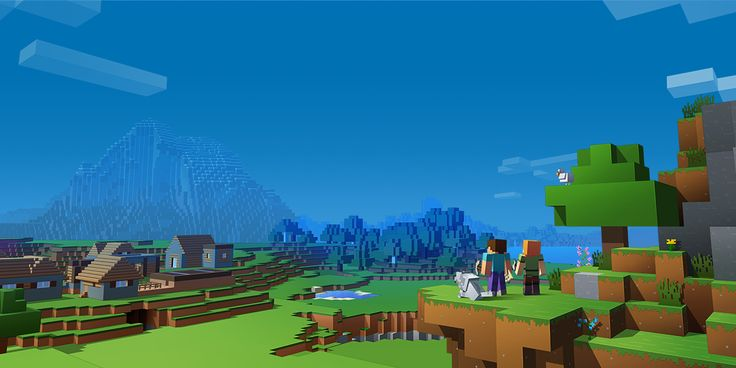

Vinicius Andrade
Olá, bem vindo(a) ao meu mini Portfólio!
Tenho 19 anos e estudo para me tornar um desenvolvedor Front-end!
Tenho conhecimento sobre html5, css3, javascript, typescript, bootstrap5, git - git hub
No momento estou focando
no Front end, talvez daqui uns anos eu esteja atuando como FullStack
Também consigo me comunicar com Inglês!